350,000plants
Vancouver Convention Centre
A coastal grassland ecosystem on the largest non-industrial green roof in North America.
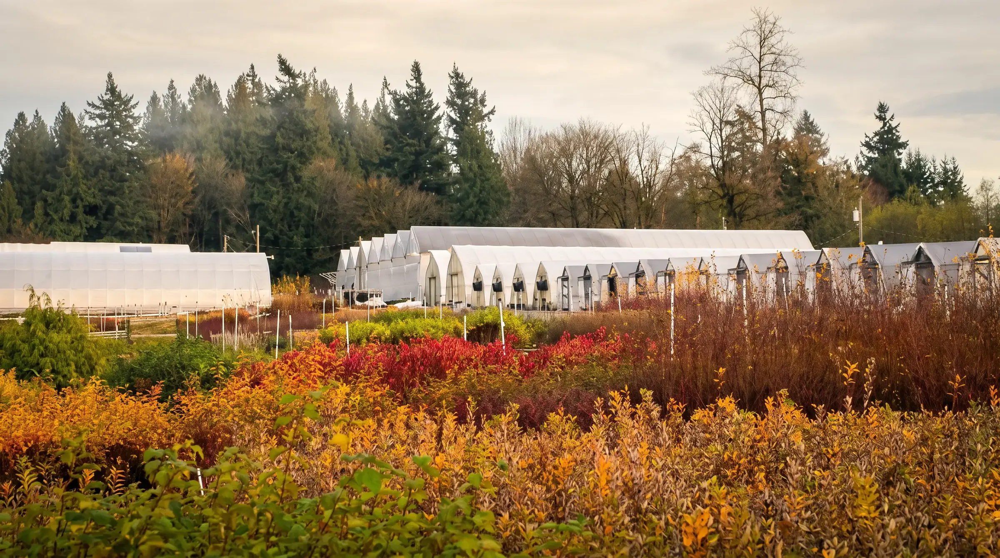
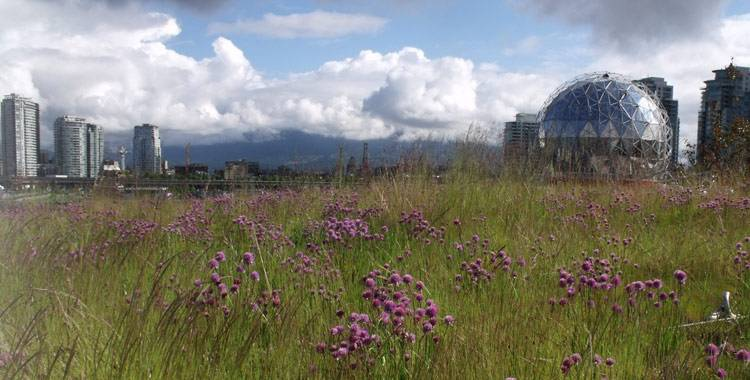
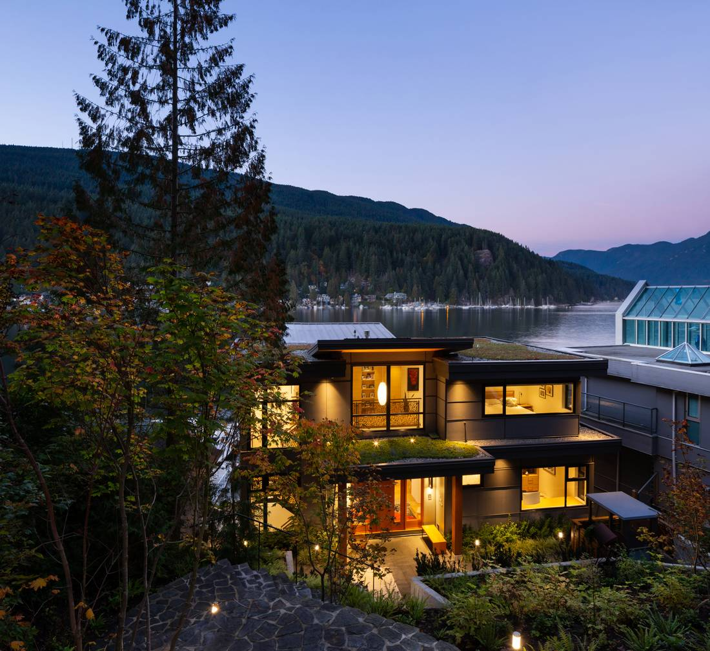
Wholesale grower · Pacific Northwest natives · since 1988
Seed-grown natives from 30 acres in Langley, BC, for restoration, landscape and green roof projects across Canada and the US.
Grown for
What we do
For 38 years NATS has grown the plants that put land back together: wetlands, mine sites, forest roads and rooftops, from Inuvik to the California coast.
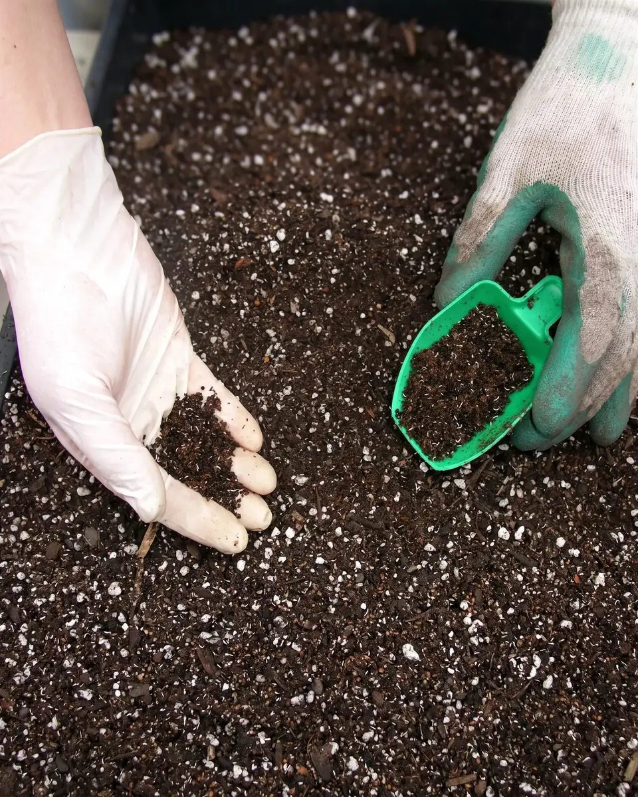
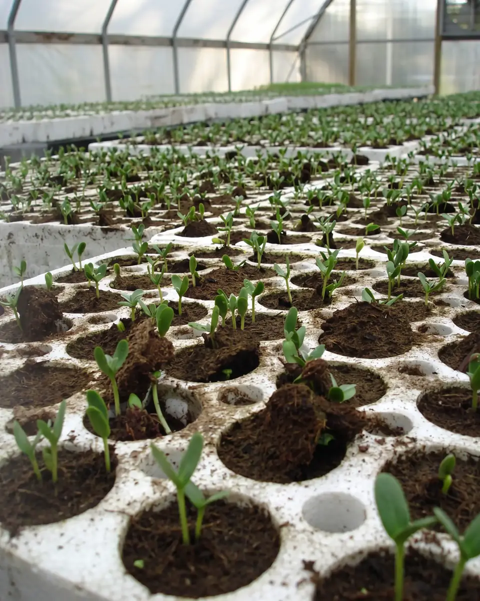
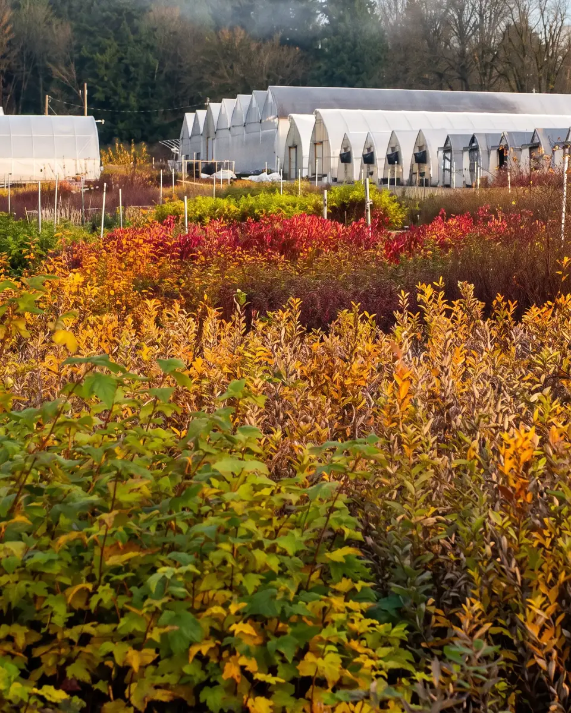
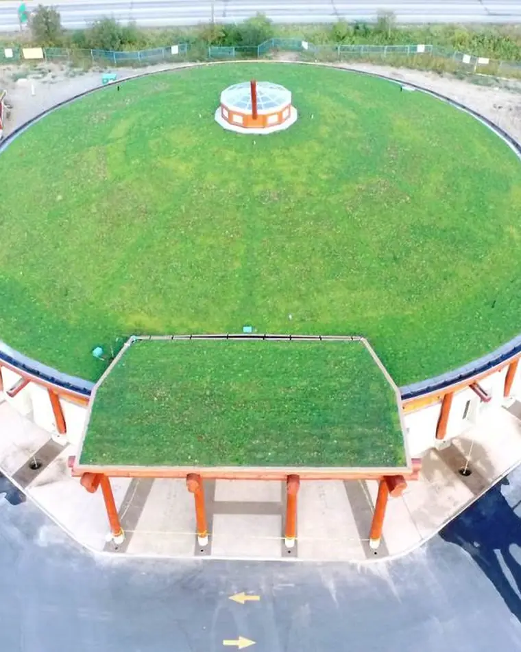
From seed to site
Seed lots carry provenance records, so your plants can match the ground they will grow in.
Mycorrhizae go into every plug. Trays of 45 to 128 cells, ready in one growing season.
About 140,000 sq ft of greenhouse and cold frame and 400+ crops, hardened off outside before they ship.
Plugs to 20-gallon pots on regular truck routes, from Fraser Valley restorations to the Splatsin Community Centre roof.
Photos: NATS Nursery, AI-remastered for this concept
500+ species in production
Start with your project
Every path leads to the right salesperson.
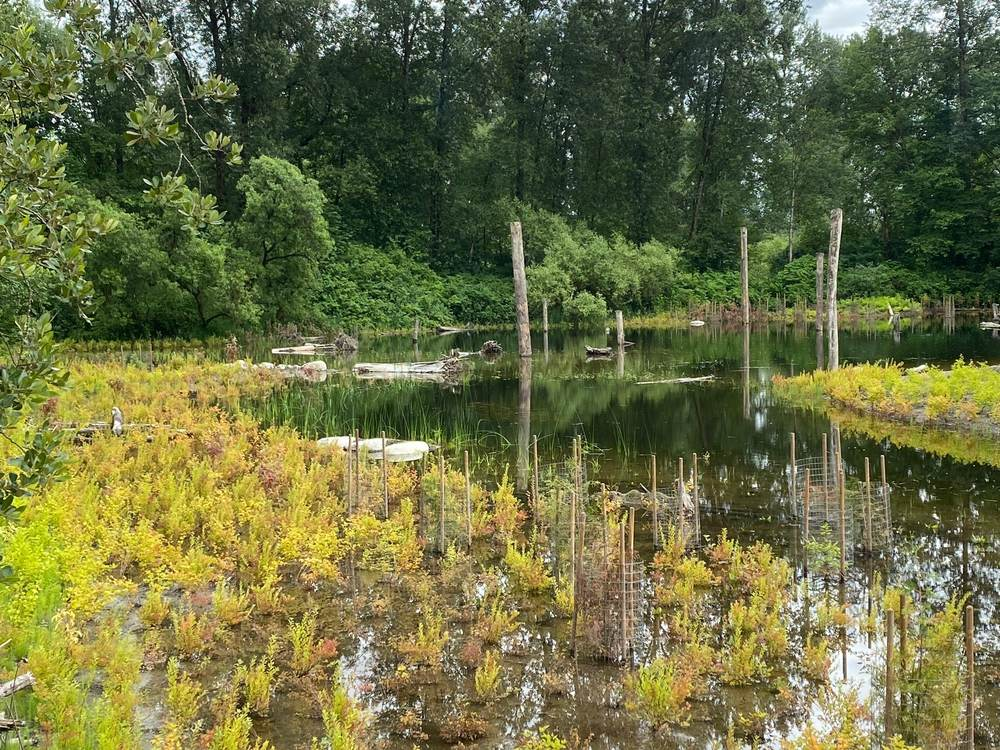
Provenance-matched plugs and pots.
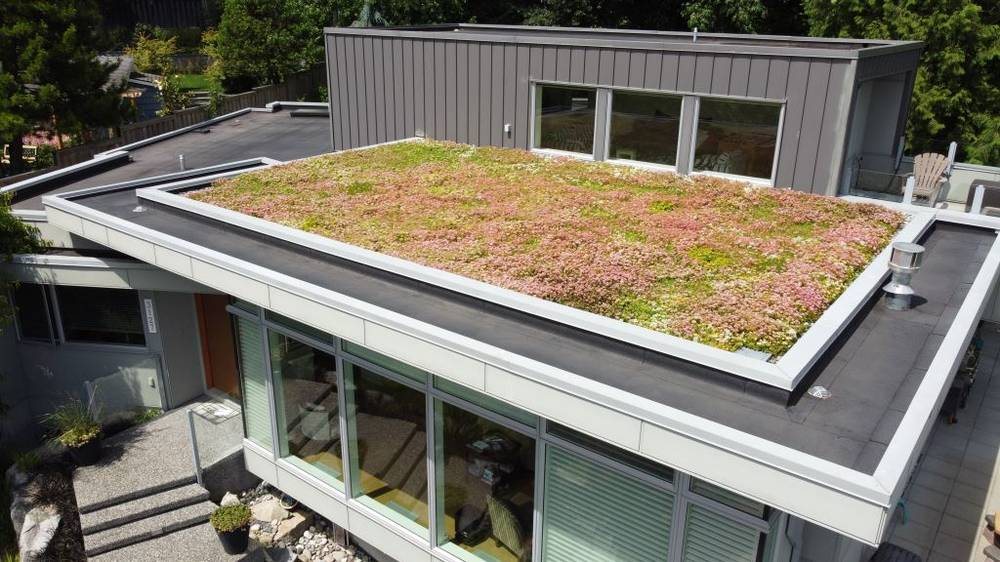
Modules delivered 95% established.
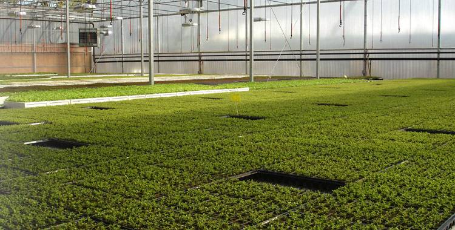
Seedlings by the hundred thousand.
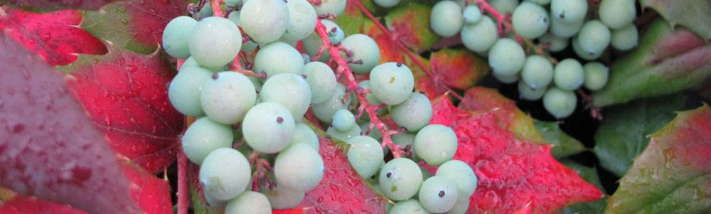
Ferns, shrubs and groundcovers, delivered.
Selected work
What clients say
“We had five suppliers for this job and NATS Nursery plants were consistently the best quality.”
“Simply the best looking green roof in Whistler, in one of the most difficult locations to plant.”
“NATS handles all the inspections, customs paperwork and trucking to make shipping plants across the border a breeze.”
“The Sword Ferns and Red-Flowering Currant are fantastic. Thanks for always providing such great service and for your amazing growing skills.”
“Your attention to detail is evident from the quality of your plants.”
“The conifer seedlings were the best looking seedlings they had planted all season.”
“Our LiveRoof is doing so well in its third year. A marvelous treat from our deck.”
“NATS Nursery was chosen to collect the seeds and cuttings because of their outstanding propagation facilities and knowledge of native plants.”
Testimonials from natsnursery.com, lightly shortened. The finished site would pull live Google reviews.
Certified and affiliated
Logos as published on natsnursery.com.
NATS Nursery · Langley, BC
This concept was built from what is already on natsnursery.com. The real site starts with a conversation about where NATS is going.
Plant finder · 500+ native species
Filter by what your project needs. Add plants and quantities to your list and one salesperson comes back with pricing and availability.
Propagation house · Langley · photo by NATS, AI-remastered
Photographs of individual species in this demo are from Wikimedia Commons contributors and are used under their Creative Commons licences. The finished site will use NATS's own photography.
Starter plugs
Seed-grown in our propagation house. Ideal for large counts, restoration and grow-on.
Finished containers
Ready for the jobsite. Regular delivery routes across the Lower Mainland and into Washington.
Christmas tree seedlings
Noble, Fraser, Grand, Nordmann, Douglas and Balsam fir plugs for tree farms.
LiveRoof® hybrid green roof system · licensed BC grower
LiveRoof modules are grown to 95% coverage at our nursery, then lifted onto your roof. No establishment period, no erosion risk on slopes, and any module can be lifted for maintenance. NATS is the licensed LiveRoof® grower for British Columbia.
Deep Cove Cliffhanger · North Vancouver
Roof planner
Estimates only. Module counts assume the standard 1 by 2 foot LiveRoof module. Dean confirms pricing.
Plant mix
Estimated modules
1 by 2 foot modules, plus 3% cutting allowance
LEED: LiveRoof contributes to SS credits for heat island reduction and stormwater. Ask for the spec sheet.
"The result has been simply the best looking green roof in Whistler, in one of the most difficult locations to plant."
Mike Ciebien, Whistler, BC · LiveRoof installed late fall, no winter kill
Custom growing & seed collection
Reclamation and revegetation succeed or fail on provenance. NATS collects seed in your project region, holds it in our seed bank with records, and grows it out on your schedule. We have grown from Inuvik to the California coast.
Seed into growing medium · photo by NATS, AI-remastered
How a custom grow works
Track record
A coastal grassland ecosystem on the largest non-industrial green roof in North America.
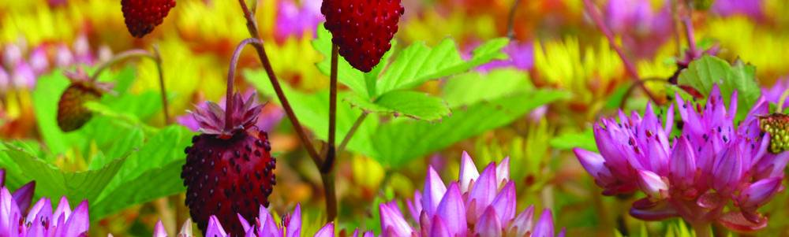
Fragaria chiloensis for Rana Creek's living roof in San Francisco.
Seed collected in Inuvik, grown two years in Langley, returned north for a shelterbelt designed by Cornelia Hahn Oberlander.
Interior conifers and shrubs grown from regional seed for a closed mercury mine.
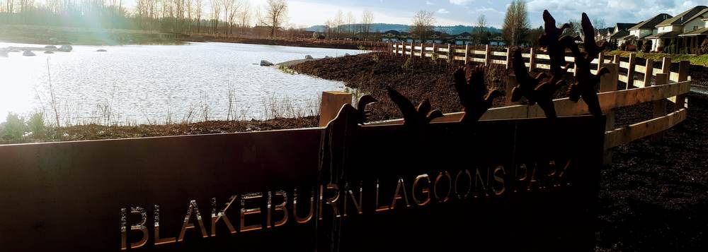
Perennials, shrubs and wetland plants for a reclaimed lagoon in Port Coquitlam.
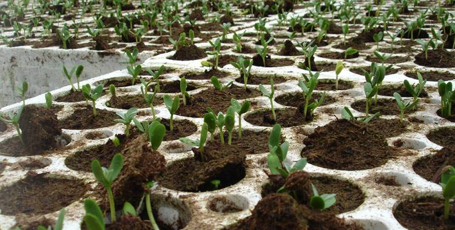
Conifer seedling production for Canada's 2 Billion Trees commitment.
Portfolio
Wetland restoration, forest road decommissioning, living roofs, highway greening and custom growing for Canada's coldest regions.
Splatsin Community Centre · Enderby · photo by NATS, AI-remastered
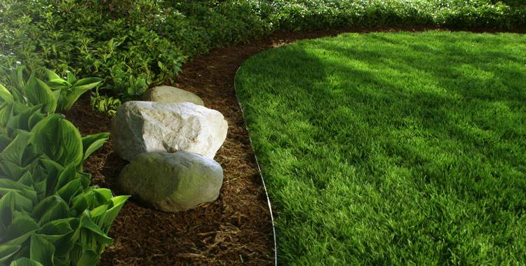
About NATS · since 1988
Founded by Rod Nataros in 1988 as North American Tree Specialists, NATS moved to a purpose-built 30-acre nursery in Langley in 2002. Today a team of growers, propagators and salespeople produce more than 500 native species for restoration, reclamation, reforestation and green roofs.
The nursery in October · Langley · photo by NATS, AI-remastered
The NATS story
North American Tree Specialists opens on Fraser Highway.
A purpose-built nursery: propagation facility, greenhouses and a shipping yard.
Awarded the growing contract for 350,000 plants on the living roof.
Became BC’s licensed LiveRoof grower and Permaloc distributor.
Launched seed collection training.
Certified for workplace health and safety.
38 years on, grown in Langley and shipped from the Arctic to California.
Indigenous relations
We conduct our business on the traditional lands of the Katzie, Kwantlen, Matsqui and Semiahmoo First Nations.
We believe reclamation should return land to functioning habitat for wildlife and people, and that this requires the knowledge of the original inhabitants. NATS is proud to work with First Nations on land reclamation across BC, the North and Alberta.
Memberships & certifications
Meet the team
Contact & shipping
Every salesperson, every shipping answer, on one page. Mon–Fri 8:00–4:30 at 604-530-9300.
Colony Farm restoration · Coquitlam · photo by NATS, AI-remastered
Who to talk to
Tap an address to copy it.
24555 32nd Avenue, Langley, BC V2Z 2J5
At the end of 32nd Avenue. Access from 240th or 232nd Street only. Not accessible from 248th Street. About 15 minutes from Highway 1, exit 66.
Shipping
Regular NATS truck routes cover the Lower Mainland, Fraser Valley, Sea to Sky and Vancouver Island. Pick-up at the nursery welcome with 24 hours notice.
Common carrier or dedicated truck to Alberta, the Yukon, NWT and beyond. Dormant stock ships best in spring and fall.
NATS ships regularly to Washington and Oregon and has supplied projects to California. We are Clean Plants certified and handle phytosanitary certification.
International orders are quoted case by case. Contact the appropriate sales rep with species, sizes and destination.
Build a plant list in the finder, or describe your project and we'll route it.
Next step
Everything on this demo came from what is already on natsnursery.com. The real site starts with a conversation: how you see NATS growing, which customers matter most, and what your sales team needs from a website every day. We customize every step of the way, but first we want to understand.
Suhaas · Thrive Labs · Vancouver, BC.
Three years out: which product lines grow, which regions, which customers.
Landscape architects, restoration firms, municipalities, roofing contractors, garden centres. The site is built around the ones you want more of.
Availability updates, quote routing, the catalogue. Whatever saves Jenn, Michael and Dean an hour a week.
Scope, timeline and a fixed price after the call, not before it.